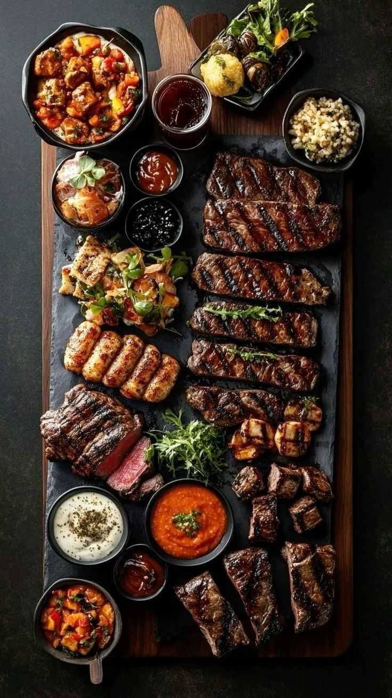

Juicy, tender, and bursting with rich culinary depth! A prime grass-fed beef cut seared in garlic-herb butter, finished with a velvety red wine reduction glaze and roasted broccolini.

Bring steak to room temperature. Pat completely dry with paper towels. Season aggressively with coarse sea salt and freshly cracked black peppercorns.
Heat cast-iron skillet until smoking hot. Add olive oil and sear steak for 3–4 minutes undisturbed per side to develop a deep, caramelized crust.
Add butter, crushed garlic cloves, and fresh thyme sprigs. Tilt skillet and continuously spoon foaming herb butter over steak for 1 minute. Rest steak on a warm cutting board.
In the same pan, pour dry red wine and beef stock. Simmer over medium heat for 3–4 minutes until reduced to a glossy, rich glaze. Spoon generously over sliced steak.